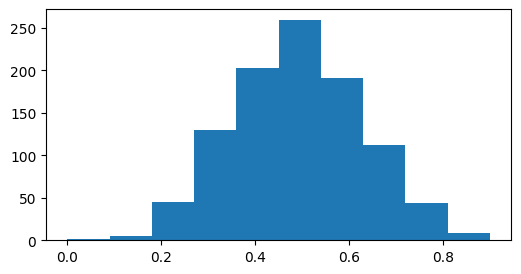
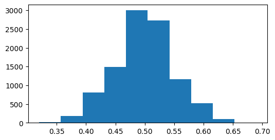

#Analogy to a language dictionary:
EnglishGerman = {"slander": "Verleumdung",
"salient" : ["auffallend", "hervorstechend"],
"secular" : "profan",
"rejoice" : "jubeln"}12 Dictionaries
In this lesson we will get to know and become experts in:
- Dictionaries
- DataCamp, Intermediate Python, Chap 2
Dictionaries
A dictionary is basically a lookup table. It stores a collection of key-value pairs, where key and value are Python objects. Each key is associated with a value so that a value can be conveniently retrieved, inserted, modified, or deleted given a particular key.
The dictionary or dict may be the most important built-in Python data structure. In other programming languages, dictionaries are sometimes called hash maps or associative arrays.
#adding elements:
EnglishGerman["rain"] = "Regen"
EnglishGerman{'slander': 'Verleumdung',
'salient': ['auffallend', 'hervorstechend'],
'secular': 'profan',
'rejoice': 'jubeln',
'rain': 'Regen'}europe = {'spain':'madrid', 'france' : 'paris'}
print(europe["spain"])
print("france" in europe)
print("paris" in europe)#only checks the keys!
europe["germany"] = "berlin"
print(europe.keys())
print(europe.values())
"paris" in europe.values()madrid
True
False
dict_keys(['spain', 'france', 'germany'])
dict_values(['madrid', 'paris', 'berlin'])TrueDictionaries from lists
How would we convert two lists into a key: value pair dictionary?
Method 1: using zip
rooms=['hallway', 'kitchen', 'living room', 'bedroom', 'bathroom']
areas=[11.25, 18.0, 20.0, 10.75, 9.5]
#create list of tuples
house = list(zip(rooms, areas))
house
#house["kitchen"][('hallway', 11.25),
('kitchen', 18.0),
('living room', 20.0),
('bedroom', 10.75),
('bathroom', 9.5)]house = dict(zip(rooms, areas))
house
#house["kitchen"]{'hallway': 11.25,
'kitchen': 18.0,
'living room': 20.0,
'bedroom': 10.75,
'bathroom': 9.5}You can directly convert a dictionary to a one-column DataFrame where the keys become the row index and the values become the column entries.
import pandas as pd
df = pd.DataFrame.from_dict(house, orient='index', columns=['value'])
print(df) value
hallway 11.25
kitchen 18.00
living room 20.00
bedroom 10.75
bathroom 9.50If you need to iterate over both the keys and values, you can use the items method to iterate over the keys and values as 2-tuples:
for i in range(5):
print(i)0
1
2
3
4#print(list(europe.items()))
for country, capital in europe.items():
print(capital, "is the capital of", country)madrid is the capital of spain
paris is the capital of france
berlin is the capital of germanyNote: You can use integers as keys as well. However -unlike in lists- one should not think of them as positional indices!
#Assume you have a basement:
house[0] = 21.5
house{'hallway': 11.25,
'kitchen': 18.0,
'living room': 20.0,
'bedroom': 10.75,
'bathroom': 9.5,
0: 21.5}#And there is a difference between the string and the integer index!
house["0"] = 30.5
house{'hallway': 11.25,
'kitchen': 18.0,
'living room': 20.0,
'bedroom': 10.75,
'bathroom': 9.5,
0: 21.5,
'0': 30.5}Categorize a list of words by their first letters as a dictionary of lists:
words = ["apple", "bat", "bar", "atom", "book"]
by_letter = {}
for word in words:
letter = word[0]
if letter not in by_letter:#if key does not exist yet then add the key value pair !
by_letter[letter] = [word]
else:#otherwise key exists, so just append
by_letter[letter].append(word)
by_letter
by_letter["b"]['bat', 'bar', 'book']w = "apple"
w[0]'a'Tasks
- Write a function named
word_count()that takes a string as input and returns a dictionary with each word in the string as a key and the number of times it appears as the value, e.g.word_count("I really really really like this really nice book")should yield:{"I":1, "book":1 , "like":1, "really": 4, "this":1} - Convert the dict into a pd dataframe and -using Boolean subsetting- only keep rows with counts > 1!
def word_count(text):
words = text.split()
frequency = {}
for i in words:
if i not in frequency:
frequency[i] = 1
else:
frequency[i] += 1
return frequency
text = "I really, really, really, like this really nice book!"
final_counts = word_count(text)
print(final_counts){'I': 1, 'really,': 3, 'like': 1, 'this': 1, 'really': 1, 'nice': 1, 'book!': 1}text = "I really, really, really, like this really nice book!"
text.split()['I',
'really,',
'really,',
'really,',
'like',
'this',
'really',
'nice',
'book!']#is there another function that counts how often values occur in an array ?
import numpy as np
x = [1,2,1,1,2,3,3,4,1]#.count()
np.unique(x,return_counts=True)(array([1, 2, 3, 4]), array([4, 2, 2, 1]))x = np.array([1,2,1,1,2,3,3,4,1])
x > 2
#x[x>2]#maybe this retrieves
x == 2#question !! It is not an assignment !!array([False, True, False, False, True, False, False, False, False])import pandas as pd
y = pd.DataFrame(x)
y[x>2]| 0 | |
|---|---|
| 5 | 3 |
| 6 | 3 |
| 7 | 4 |
df = pd.DataFrame.from_dict(europe, orient='index', columns=['value'])
df| value | |
|---|---|
| spain | madrid |
| france | paris |
| germany | berlin |
#df[df["value"] == "berlin"]
selRows = (df["value"] == "berlin")
df[selRows]| value | |
|---|---|
| germany | berlin |
13 Titanic
import seaborn as sns
titanic = sns.load_dataset('titanic')
titanic| survived | pclass | sex | age | sibsp | parch | fare | embarked | class | who | adult_male | deck | embark_town | alive | alone | |
|---|---|---|---|---|---|---|---|---|---|---|---|---|---|---|---|
| 0 | 0 | 3 | male | 22.0 | 1 | 0 | 7.2500 | S | Third | man | True | NaN | Southampton | no | False |
| 1 | 1 | 1 | female | 38.0 | 1 | 0 | 71.2833 | C | First | woman | False | C | Cherbourg | yes | False |
| 2 | 1 | 3 | female | 26.0 | 0 | 0 | 7.9250 | S | Third | woman | False | NaN | Southampton | yes | True |
| 3 | 1 | 1 | female | 35.0 | 1 | 0 | 53.1000 | S | First | woman | False | C | Southampton | yes | False |
| 4 | 0 | 3 | male | 35.0 | 0 | 0 | 8.0500 | S | Third | man | True | NaN | Southampton | no | True |
| ... | ... | ... | ... | ... | ... | ... | ... | ... | ... | ... | ... | ... | ... | ... | ... |
| 886 | 0 | 2 | male | 27.0 | 0 | 0 | 13.0000 | S | Second | man | True | NaN | Southampton | no | True |
| 887 | 1 | 1 | female | 19.0 | 0 | 0 | 30.0000 | S | First | woman | False | B | Southampton | yes | True |
| 888 | 0 | 3 | female | NaN | 1 | 2 | 23.4500 | S | Third | woman | False | NaN | Southampton | no | False |
| 889 | 1 | 1 | male | 26.0 | 0 | 0 | 30.0000 | C | First | man | True | C | Cherbourg | yes | True |
| 890 | 0 | 3 | male | 32.0 | 0 | 0 | 7.7500 | Q | Third | man | True | NaN | Queenstown | no | True |
891 rows × 15 columns
#get the age column:
titanic["age"]
titanic.age
#this was column subsetting
#can you get rows 1:2
#if this was numpy you could just do the folllowing:
#titanic[0:2,:]
#one reason is the ability to use strings as indices, so integer indexing needs its own handling.
#titanic.iloc[0:2,:]
#titanic.row = range(1)
#get me rows 13 to 24 (ends inclusive)
titanic.iloc[12:24,:]| survived | pclass | sex | age | sibsp | parch | fare | embarked | class | who | adult_male | deck | embark_town | alive | alone | |
|---|---|---|---|---|---|---|---|---|---|---|---|---|---|---|---|
| 12 | 0 | 3 | male | 20.0 | 0 | 0 | 8.0500 | S | Third | man | True | NaN | Southampton | no | True |
| 13 | 0 | 3 | male | 39.0 | 1 | 5 | 31.2750 | S | Third | man | True | NaN | Southampton | no | False |
| 14 | 0 | 3 | female | 14.0 | 0 | 0 | 7.8542 | S | Third | child | False | NaN | Southampton | no | True |
| 15 | 1 | 2 | female | 55.0 | 0 | 0 | 16.0000 | S | Second | woman | False | NaN | Southampton | yes | True |
| 16 | 0 | 3 | male | 2.0 | 4 | 1 | 29.1250 | Q | Third | child | False | NaN | Queenstown | no | False |
| 17 | 1 | 2 | male | NaN | 0 | 0 | 13.0000 | S | Second | man | True | NaN | Southampton | yes | True |
| 18 | 0 | 3 | female | 31.0 | 1 | 0 | 18.0000 | S | Third | woman | False | NaN | Southampton | no | False |
| 19 | 1 | 3 | female | NaN | 0 | 0 | 7.2250 | C | Third | woman | False | NaN | Cherbourg | yes | True |
| 20 | 0 | 2 | male | 35.0 | 0 | 0 | 26.0000 | S | Second | man | True | NaN | Southampton | no | True |
| 21 | 1 | 2 | male | 34.0 | 0 | 0 | 13.0000 | S | Second | man | True | D | Southampton | yes | True |
| 22 | 1 | 3 | female | 15.0 | 0 | 0 | 8.0292 | Q | Third | child | False | NaN | Queenstown | yes | True |
| 23 | 1 | 1 | male | 28.0 | 0 | 0 | 35.5000 | S | First | man | True | A | Southampton | yes | True |
What are the estimated survival probabilities by sex and class separately?
bySex = titanic.groupby("sex").survived
bySex.mean()| survived | |
|---|---|
| sex | |
| female | 0.742038 |
| male | 0.188908 |
Can you repeat the above but only for passengers with age >= 18
bySex = titanic[titanic["age"] >= 18].groupby("sex").survived
bySex.mean()--------------------------------------------------------------------------- NameError Traceback (most recent call last) Cell In[1], line 1 ----> 1 bySex = titanic[titanic["age"] >= 18].groupby("sex").survived 2 bySex.mean() NameError: name 'titanic' is not defined
noChildren = titanic[titanic["age"] >= 18]
bySex = noChildren.groupby("sex").survived
bySex.mean()| survived | |
|---|---|
| sex | |
| female | 0.771845 |
| male | 0.177215 |
byClass = titanic.groupby("pclass").survived
byClass.mean()What are the estimated survival probabilities by class and sex simultaneously ?
byClass = titanic.groupby(["pclass","sex"]).survived
byClass.mean()| survived | ||
|---|---|---|
| pclass | sex | |
| 1 | female | 0.968085 |
| male | 0.368852 | |
| 2 | female | 0.921053 |
| male | 0.157407 | |
| 3 | female | 0.500000 |
| male | 0.135447 |
Can we also get counts ?
byClass = titanic.groupby(["pclass","sex"]).survived
#how do you add multiple functions
byClass.agg(["mean", "count"])| mean | count | ||
|---|---|---|---|
| pclass | sex | ||
| 1 | female | 0.968085 | 94 |
| male | 0.368852 | 122 | |
| 2 | female | 0.921053 | 76 |
| male | 0.157407 | 108 | |
| 3 | female | 0.500000 | 144 |
| male | 0.135447 | 347 |
There seem to be clear differences in probabilties/proportions.
How can we be sure that they are not due to small sample sizes ?
Can we put an uncertainty on the estimates ?
Write a function which simulates tossing a “biased coin” (with \(p=0.157407\)) \(108\) times and computes the proportion of “heads”.
Call this function “many” times and plot a histogram
def toss_biased_coin(pHead, n, seed=None):
"""
Simulates n tosses of a biased coin and returns the proportion of heads,
using rng.choice() for better conceptual clarity.
Parameters
----------
pHead : float
Probability of heads (between 0 and 1).
n : int
Number of tosses.
seed : int, optional
Random seed for reproducibility.
Returns
-------
float
Proportion of heads observed.
"""
rng = np.random.default_rng(seed)
tosses = rng.choice([0,1], size=n, p=[1-pHead,pHead])
cts = np.sum(tosses == 1)
cts = np.sum(tosses)
prop_heads = cts/n
prop_heads = np.mean(tosses)
return prop_heads
toss_biased_coin(pHead=0.157407, n= 108)#, seed = 123)np.float64(0.17592592592592593)#let us run this many times !
pHead_obs = np.zeros(500)
for i in range(500):
pHead_obs[i] = toss_biased_coin(pHead=0.157407, n= 108)
#95% interval:
np.percentile(pHead_obs, [2.5,97.5])array([0.09259259, 0.22222222])#histogram
import matplotlib.pyplot as plt
plt.figure(figsize=[6,3]);
plt.hist(pHead_obs);
Related Questions:
The board of a large international company consists of 7 women and 3 men. If sex played no role, i.e. if we assume that the probabilities of m/f were equal, how likely is it to see such asymmetric proportions?
How does this assessment change if the board consisted of 100 members and there would be 70 men and 30 women ?
#let us run this many times !
nSim = 1000
pHead_obs = np.zeros(nSim)
for i in range(nSim):
pHead_obs[i] = toss_biased_coin(pHead=0.5, n= 10)
plt.figure(figsize=[6,3]);
plt.hist(pHead_obs);
#how likely is it that one sees sth. "as extreme as 7/3"
np.mean(pHead_obs >= 0.7) + np.mean(pHead_obs <= 0.3)np.float64(0.347)#let us run this many times !
nSim = 10000
pHead_obs = np.zeros(nSim)
for i in range(nSim):
pHead_obs[i] = toss_biased_coin(pHead=0.5, n= 100)
plt.figure(figsize=[6,3]);
plt.hist(pHead_obs);
np.mean(pHead_obs >= 0.7) + np.mean(pHead_obs <= 0.3)np.float64(0.0)#What is the exact answer of this question given that you now know sigma !
s = np.sqrt(p*(1-p)/100)
s
#how likely to be above 0.7
zScore = (0.7-0.5)/s
zScore
#scipy.statnp.float64(3.999999999999999)s = np.std(pHead_obs)
print(s)
0.5 + 2*s
0.5 - 2*s0.15604406428954612np.float64(0.18791187142090776)SUPER IMPORTANT !! What is the stdev in the binomial distribution ??
The FAMOUS SQRT(N) LAW !!!
p= 0.5
#Variance:
p*(1-p)
np.sqrt(p*(1-p)/10)np.float64(0.15811388300841897)